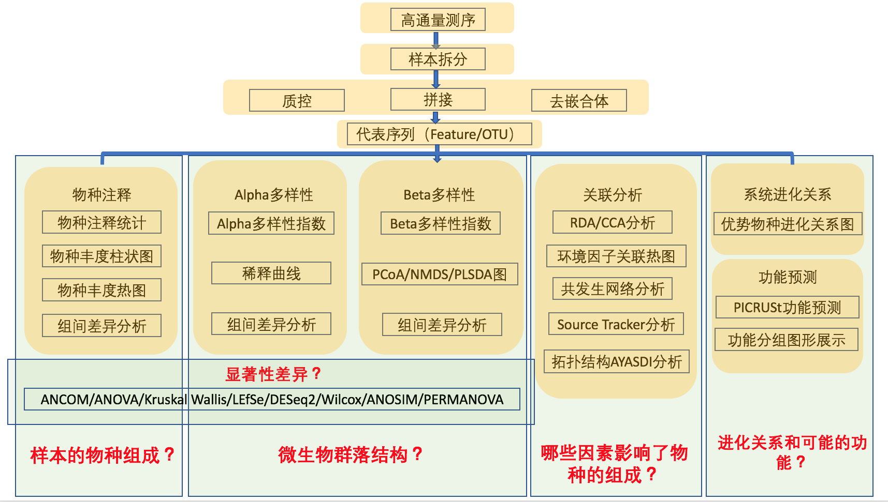

微生太扩增子_样本_结题报告
一 概述
微生物世界是分子多样性最大的天然资源库，基于菌株水平的传统分离培养技术为人们认识微生物多样性提供了可能，但是据估计自然界中超过99%的微生物不能通过传统的分离培养技术获得其纯培养，从而导致环境微生物中的多样性基因资源难以被发现。许多重要的微生物我们还不能识别，随着微生物活性产物的广泛研究和深入开发利用，从环境微生物中筛选到新活性物质的几率将逐步下降。而如何开拓利用环境微生物新资源是微生物研究的重要课题。为此研究者们开发了多种以特定环境微生物为研究对象的高通量测序方法。细菌基因组相对较小，通常仅有一条环状DNA和质粒，通过高通量测序，可以了解其全部遗传信息。这也已经成为微生物研究的重要手段之一，为细菌的遗传进化、疾病预防与治疗、疫苗与抗生素的开发等提供重要的信息。
16S rRNA 测序技术是最常用的高通量测序依赖的组学技术之一，该技术着眼于对肠道微生物群落菌种组成的分析。细菌16S rRNA基因具有保守区与可变区间隔排列的特征，其中的可变区一般具有菌种特异性，并且可以反映细菌间亲缘关系的远近，因此通过分析可变区的序列即可得到各细菌的分类学特征。16S rRNA 基因序列包括9个可变区和10个保守区。传统分子生物学方法中有时也应用 Sanger法对单一菌种的16S rRNA进行测序和鉴定，而 16S rRNA 测序技术通过结合高通量测序技术的高通量优势和16S rRNA基因的菌种鉴定优势，实现了对复杂样品中混合菌种的分类学鉴定和精确定量。16SrRNA 测序技术的基本流程通过提取实验样品的DNA，并扩增16S rDNA某个可变区，采用高通量测序仪Miseq或Hiseq对其进行测序，通过生物信息学分析可以获得特定实验样品中细菌或古菌物种组成、物种丰度、系统进化、群落比较等诸多信息。
二 项目流程
2.1 实验流程

2-1 实验工作流程图
2.2 信息分析流程
为了保证OTU(Operational Taxonomic Units)聚类及后续分析的准确性，首先会对原始测序数据进行过滤处理，处理后的数据进行拼接、过滤，得到有效数据。然后基于有效数据进行OTU聚类/去噪和物种分类分析，形成OTU和其他物种分类等级的物种丰度谱。基于数据均一化后的OTU物种丰度谱，再对OTU进行丰度、多样性指数等分析，并对物种注释在各个分类水平上进行群落结构的统计分析。还可以在以上分析的基础上，进行一系列的基于OTU、物种组成的聚类分析和统计比较分析，挖掘样品之间的物种组成差异，结合环境及临床因子等进行关联统计分析，寻找与其显著相关的物种群落，进行微生物群路的功能预测分析。
请注意的是，生物信息分析流程分析使用的是QIIME2推荐的DADA2方法来去噪去嵌合，相较QIIME1的UPARSE等聚类方法得出来的结果，DADA2比上一代分析的结果更准确。因为不再按相似度聚类，所以生成的代表序列不再是OTU。更准确的来说，在本报告中提到OTU应被称为扩增特征序列（ASV:Amplicon Sequence Variant或者Feature sequence）。但为了方便理解，我们在报告中将以OTU来代表这个扩增特征的代表序列。这也是目前研究扩增子领域研究人员通用的做法。

图2-2 信息分析流程图
三 测序数据预处理 (1-QCStats目录)
采用Illumina MiSeq/HiSeq测序平台得到的下机数据经过数据拆分、去引物序列、双端序列拼接、序列质量及长度过滤和截取以及去嵌合体后获得最终的有效序列信息

图3-1 数据拆分序列数目统计
点击此处查看具体的样本测序量统计及序列测序质量统计结果（推荐）
结果目录：./ 1-QCStats/，存放样本的原始双端测序序列、拼接的序列、低质量及嵌合体过滤后的拆分后的序列以及相关的序列长度和数量的统计文件。目录下文件详细解释请参考./Result_README.pdf文件。重要：qzv文件是Qiime2的专属可视化文件格式，可以通过网页https://view.qiime2.org/进行交互性查看，也可以直接点开相应的qzv解压缩文件夹通过网页形式直接点开HTML文件“Summary_请点此文件查看.html”查看（推荐）。本报告只选取了部分主要信息用于阅读，然而qzv文件中包含大量其他有用的交互式信息，请用户自行查看。
四 物种的注释与评估(2-AundanceAnalysis目录)
4.1 物种组成分析
为了研究样品物种组成及多样性信息，对所有样品的全部的有效序列进行聚类/去噪，形成OTU，也可以称特征序列。选取OTU的代表性序列，与核糖体RNA数据库(Greengenes Database [99%])进行比对获得物种注释信息。基于物种注释信息，去除注释为叶绿体、线粒体以及不能注释到界级别的OTU及其包含的序列。基于OTU的绝对丰度及注释信息，对每个样品在一共7个分类水平界门纲目科属种(Kingdom,Phylum,Class,Order,Family,Genus,Species)上的序列数目占总序列数的比例进行统计，可以有效的评估样本的物种注释分辨率（注释到属的比例越高表示样本的OTU注释效果越好）及样本的物种复杂度(注释到属的比例越低表示样本的物种复杂度越高)，图4-1同时统计了各分类水平的物种在每个样本中的相对丰度。

图 4-1 各个样品在各分类水平上的序列注释程度柱形图
图 4-2 点击此处查看QIIME2各分类水平的物种相对分布情况的展示图（推荐）

图 4-2(补充) 各个样品在门水平上的序列构成柱形图
为了研究不同样品间的相似性，还可以通过对样品进行聚类分析从而构建样品的聚类树。选取关注分类水平的物种（默认选取物种绝对丰度大于1000）实现样品聚类（纵向聚类），以此考察不同样品或者分组间的相似或差异性（此处为门水平分类的热图），并从分类信息和样品间差异两个层面进行横向聚类，寻找物种或样本的聚集规律。
其他分类等级完整的热图聚类结果请参见结果部分./2-AundanceAnalysis/1-AbundanceSummary/4-Heatmaps/。
4.2 组间OTU差异显著性分析
ANCOM(Analysis of composition of microbiomes)分析被用于比较物种在组间的显著性差异。从下面链接中我们可以得知在本实验中物种属水平分类在组间表现了丰度的显著差异，各个其他的分类水平也都用ANCOM方法进行了分析。
同时Kruskal Wallis/ANOVA/LEfSe/DESeq2等分析也被用于物种各分类水平在组间的显著性差异，ANCOM、Kruskal Wallis和ANOVA用于多组间丰度差异的显著性检验，Kruskal Wallis和ANOVA提供总的p值，校正p值，但不提供多重比较的结果；ANOVA是参数检验，要求丰度服从正态分布，而大部分物种的丰度都是不服从正态分布的；Kruskal Wallis属于非参数检验，对分布没有要求，较为适合菌群分析。LEfSe和DESeq2方法也是非参数检验，适合菌群丰度差异检验；LEfSe寻找每一个分组的特征微生物（默认为LDA>4的微生物），也就是相对于其他分组，在这个组中丰度较高的微生物（如图4-3）；DESeq2方法在分组间进行多重比较，寻找每两个分组之间显著差异的微生物。完整分析结果请见结果部分./2-AundanceAnalysis/2-AbundanceComparison/。

4.3 样品共有物种分析
对于样本间，根据OTU是否存在来寻找样本之间的特有或共有的OTU，对于分组较少（小于等于5）的实验方案，我们绘制韦恩图分析不同样品组之间特有或共有的OTU，用于统计多个样本中所共有和独有的OTU数目，可以比较直观的表现环境样本在不同的分类水平上的组成相似性及重叠情况（图4-3）。对于分组较多的（大于等于3），我们绘制了花瓣图，花瓣图中，花瓣里是对应分组特有的OTU数目，中心是所有分组共有的OTU数目。同时也给出了特有和共有的OTU种类，注释情况及丰度，丰度较高且特有的OTU具有重要分析价值，请参见 ./2-AbundanceAnalysis/3-VennAndFlower

图4-4 共有或特有物种Venn图展示
我们也提供了各分类水平的所有OTU在各个样本的分布情况：
点击此处查看属水平的所有OTU在各个样本的分布情况（Feature Detail）
更多完整信息请查看结果目录./2AundanceAnalysis/1-AbundanceSummary/1-AbundanceTable/3-CollapsedStats/。
五 Alpha多样性分析(3-AlphaDiversity目录)
5.1 Alpha多样性指数统计分析
Alpha多样性指数是对某个样品中物种多样性的分析，包含样品中的物种组成的丰富度和均匀度两个因素，通常用Observed OTU，Shannon以及Faith’s Phylogenetic Diversity等指数来评估某个样本的物种多样性，指数越高，表明样本的多样性越复杂。Observed OTU指数是指样本中实际测定得到的OTU数量，衡量样品中OTU丰富度的指数。Shannon指数,它的计算考虑到样品中的分类总数，和每个分类所占的比例。Faith’s Phylogenetic Diversity是基于系统发生树来计算的一种多样性指数，它用各个样品中OTU的代表序列计算出构建系统发生树的距离，将某一样品中的所有代表序列的值加和，从而得到的数值。对不同的样本Alpha多样性指数进行统计总结结果请点击此处查看。
图5-1 Shannon指数的箱型图
Alpha多样性稀释曲线(Rarefaction Curve)是从样品中随机抽取一定测序量的数据，统计它们所代表物种数目或多样性指数，以数据量与物种多样性来构建的曲线，以用来说明样品的测序数据量是否合理，并间接反映样品中物种的丰富程度。稀释性曲线图中，当曲线趋向平坦时，说明测序数据量渐近合理。
5.2 Alpha多样性指数组间差异检验
在得到整体的Alpha多样性指数之后，接下来结合分组信息来用Kruskal Wallis方法比较在各个样品分组之间Alpha多样性指数是否有显著性差异。Alpha多样性指数Kruskal Wallis方法比较结果文件为./3-AlphaDiversity/3-SignificanceAnalysis/2-Kruskal_Wallis/目录下的相关文件。除了使用QIIME2推荐的Kruskal Wallis方法，分析还包括使用Wilcox Test去精确比较了各个组间的显著性差异并做图，图5-2显示了shannon指数的组间多重比较结果。

图5-2 shannon指数的组间多重比较
其他指数的完整信息请查看./3-AlphaDiversity/3-SignificanceAnalysis/1-Wilcox_Test
六 Beta多样性分析(4-BetaDiversity目录)
6.1 Beta多样性指数统计分析
Beta Diversity是对不同样品间的微生物群落构成进行比较。根据样本的OTU丰度信息计算Bray Curtis，Weighted Unifrac和Unweighted Unifrac距离来评估不同样品间的微生物群落构差异。Bray Curtis距离是生态学上反应群落之间差异性最常用的指标，只考虑了物种的丰度信息。Unweighted Unifrac距离是基于物种系统进化关系进行计算的样本间的距离，只考虑了物种的有无。Weighted Unifrac距离是结合OTU的丰度信息和系统进化关系获得的样本间的距离。Unweighted Unifrac距离对稀有物种比较敏感，而Bray Curtis和Weighted Unifrac距离则对丰度较高的物种更加敏感。Weighted Unifrac距离，Unweighted Unifrac距离及Bray Curtis距离作为Beta多样性距离是衡量两个样品间的相异系数的指标 ，其值越小，表示这两个样品在物种多样性方面存在的差异越小。图6-1为不同样品之间以上三种距离热图的展示。详细的数值可以查看结果目录./4-BetaDiversity/1-BetaDiversitySummary/。

图6-1 Beta多样性指数热图
主坐标分析（PCoA），是一种与PCA类似的降维排序方法，从多维数据中提取出最主要元素和结构能够提取出最大程度反映样品间差异的三个坐标轴，从而将多维数据的差异反映在三维坐标图上，进而揭示复杂数据背景下的简单规律。区别在于PCA是基于样品的相似系数矩阵来寻找主坐标，而PCoA是基于距离矩阵来寻找主坐标。我们基于Bray Curtis距离、Weighted Unifrac距离和Unweighted Unifrac距离来进行PCoA分析，并选取贡献率最大的主坐标组合进行作图展示，图中样品的距离越接近，表示样品的物种组成结构越相似。分析结果文件夹分别提供了PCoA的2D和3D图，方便选择使用。
点击此处查看基于bray-curtis的PCoA 3D图（图片可拖动旋转，可调色）
其他距离完整的PCoA展示见结果目录./4-BetaDiversity/2-PCoA/
无度量多维标定法（NMDS）统计是一种适用于生态学研究的排序方法，类似于PCoA，通过样本的分布，或者基因的分布，可以看出组间差异，组内差异等。NMDS包括一类排序方法，其设计目的是为了克服以前的排序方法（即线性模型，包括PCoA）的缺点，NMDS的模型是非线性的，能更好地反映生态学数据的非线性结构。非度量多维尺度法是一种将多维空间的研究对象(样本或变量)简化到低维空间进行定位、分析和归类, 同时又保留对象间原始关系的数据分析方法。适用于无法获得研究对象间精确的相似性或相异性数据，仅能得到他们之间等级关系数据的情形，图6-2为基于Unweighted Unifrac距离进行的NMDS分析。
图6-2 2D NMDS分析
其他距离NMDS展示见结果目录./4-BetaDiversity/3-NMDS/。
PLS-DA分析,即偏最小二乘法判别分析，是一种用于判别分析的多变量统计分析方法,根据观察或测量到的若干变量值,来判断研究对象如何分类。PLS-DA属于有监督的分析方法,需要将检测样本按照类别进行分组,在计算数学模型时把各组加以区分,忽略组内的随机差异,突出组间系统差异,在观测因子远大于样本数量时具有较好的样本区分表现。基于全OTU水平的PLS-DA分析(偏最小二乘法判别分析)的坐标图也给予了提供，请参见结果目录./4-BetaDiversity/5-PLS-DA/。
6.2 基于Beta多样性指数的组间菌群结构比较
在得到整体的Beta多样性指数之后，接下来结合分组信息来用PERMANOVA方法和ANOSIM方法比较在各个样品分组之间的微生物组成结构是否有显著性差异。
点击此处查看第一种分组方案基于Unweighted Unifrac距离进行的PERMANOVA分析
基于其他距离的菌群结构差异显著性分析结果可以查看结果目录./4-BetaDiversity/6-GroupSignificance/。
七 系统进化分析(5-Phylogenetics目录)
7.1 特定物种系统进化分析
选取关注的OTU代表序列进行系统进化分析(默认总丰度排名前30的OTU)，同时结合OTU的在各个分组的绝对丰度进行热图可视化展示（图7-1）。此外，利用iTOL可以直观地展示研究环境中的物种群落组成多样性及其系统进化关系。如果需要也可以基于单个样品的物种分类结果，筛选特别关注的物种进行样本内和样本间的物种分类树及物种相对丰度统计展示。用户也可以使用./5-Phylogenetics/ 的文件用iTOL自行做图。
图7-1 系统发育进化树及组间丰度分布热图
八 关联统计分析(6-AssociationAnalysis目录)
注意：如果没有提供环境因子将没有相关性热图和RDA/CCA
8.1 CCA/RDA分析
CCA/RDA(DCA判断用哪一种分析)分析是基于对应分析发展的一种排序方法，将对应分析与多元回归分析相结合，每一步计算均与环境因子进行回归，又称多元直接梯度分析。RDA是基于线性模型，CCA是基于单峰模型（图8-1）。该分析主要用来反映菌群与环境因子之间的关系，可以检测环境因子、样品、菌群三者之间的关系或者两两之间的关系，可得到影响样品分布的重要环境驱动因子。可以查看目录./6-AssociationAnalysis/1-RDA/了解完整的各分类水平物种与环境因子的关系。

图8-1 属水平物种CCA/RDA排序图
8.2 相关性热图分析
相关性热图可以用于分析环境因子或其他临床表型数据与微生物群落或物种之间是否显著相关，然后计算环境因子与微生物物种间的Spearman相关系数，并用热图展示（图8-2）。该分析可以挑选出与某种环境因子或疾病显著相关的物种，同时提供环境因子的数据，比如 pH值、温度值、临床因子等。
图8-2 属水平微生物物种与表型之间的相互关系热图
其他分类水平的相关性热图请查看./6-AssociationAnalysis/2-CorrelationHeatmap
8.3 物种相互作用网络分析
基于物种样本间的相对丰度进行Spearman获得样本内或样本组内的物种之间的相互关系，然后用展示物种间相互关系的可视化软件进行物种相互作用网络构建（图8-3）。该分析可以寻找相互拮抗或协同的物种，从而寻找环境样本中的微生物群体协同或相互抑制信息，例如针对某种疾病相关的微生物群落，就可以发现共同作用的微生物或相互抑制的微生物，为其治疗做指导。同时我们也提供基于相对组成成分数据的相关性计算（CCLasso/SPARCC），并用Cytoscape进行定制化可视化分析（属于VIP分析）。
图8-3 属分类水平物种相互作用网络图
其它分类水平的相关网络图请查看./6-AssociationAnalysis/3-NetworkAnalysis
8.4 Source tracker 分析（VIP分析）
使用基于贝叶斯算法的Source tracker分析，可以寻找样本中的微生物可能来源及其在样本中分布的比例，该方法适用于寻找环境样本或微生物感染的临床样本的微生物物种来源，需要采集可能会影响样本微生物组成的相关联的环境样本（图8-4）。

图8-4 样本微生物来源分析示例图片
8.5 AYASDI拓扑数据分析（VIP分析）
拓扑数据分析是把拓扑学与数据分析结合的一种分析方法，研究的是复杂的高维数据的几何性质。相比于主成分分析、聚类分析这些常用的方法，拓扑数据分析不仅可以有效地捕捉高维数据空间的拓扑信息，而且擅长发现一些用传统方法无法发现的小分类。AYASDI是一个拓扑数据分析的机器智能平台（付费）。它包括许多统计数据以及有监督和无监督的机器学习算法，并且可以扩展到包括特定类别分析所需的任何算法。它将拓扑数据分析作为一个统一的分析框架，自动计算大型和高维数据集的分组和相似性，生成网络图，极大地帮助理解数据集群和哪些变量的相关性。
图8-5 AYASDI分析用于区别发现更细致的分类关系（示例图片）
九 样品微生物组成功能预测分析(7-FunctionAnalysis目录)
9.1 预测微生物群落功能
PICRUSt的原理是基于已测细菌基因组的16S rRNA序列，推断它们的共同祖先的基因功能谱，对Greengenes数据库中其它未测物种的基因功能谱进行推断，构建古菌和细菌域全谱系的基因功能预测谱，最后，将测序得到的菌群组成映射到数据库中，对菌群代谢功能进行预测。KEGG功能根据注释深度可以分为三级，图9-1展示的是产生的L1级别功能预测组成的柱形图。其他注释等级可查看目录./7-FunctionAnalysis/1-KEGG_Pathway/。

图9-1 KEGG L1微生物群落功能预测组成柱形图
9.2 预测功能PCA分析
基于已知物种的16S物种信息和KEGG功能信息，可以获得环境样本的KEGG功能种类及其相对丰度信息。基于KEGG功能及其代谢途径相对丰度，可以进行样本间KEGG代谢途径PCA分析，图9-2是基于KEGG 功能级别的功能PCA图。其他注释等级的PCA图可查看目录/7-FunctionAnalysis/2-PCAPlots/。
图9-2 基于KEGG L1水平的PCA分析结果展示
9.3 预测功能聚类分析
为了研究不同样品间的Bray Curtis相似性，还可以通过对样品进行聚类分析，构建样品的聚类树。从基因在各样品中的丰度表出发，以Bray Curtis矩阵进行样品间聚类分析（图9-3）。其他注释等级的聚类树图可查看目录/ 7-FunctionAnalysis/3-TreeBasedPlots/。

图9-3 基于Bray Curtis距离的第一层级聚类树
9.4 组间功能差异性分析
在得到KEGG功能注释后，结合分组信息，STAMP软件在这里被用于分析在微生物群落在不同组间的功能是否有显著性差异。为了方便用户是个性化地做比较分析，分析结果中给用户提供了STAMP软件的输入文件./7-FunctionAnalysis/1-KEGG_Pathway/feature-table.metagenome.KEGG_Pathways.STAMP.txt。
十 分析方法及参考文献
10.1 测序数据预处理
10.1.1 分析方法
采用Illumina MiSeq/HiSeq测序平台得到的下机数据存在一定的低质量数据，会干扰分析的结果，因此在进一步分析前，需要对下机数据进行预处理，具体处理步骤如下：
1）数据拆分：使用Perl脚本，根据Barcode序列将下机数据拆分为不同样品数据，并截去Barcode序列和PCR扩增引物序列；
2）PE Reads拼接：根据质量过滤序列尾部质量值30以下的碱基；根据双端测序序列之间的长度关系，将成对双端测序序列拼接成一条序列，最小重复区域长度为20bp。
10.1.2 参考文献
1. Bokulich, N. A. et al. Quality-filtering vastly improves diversity estimates from Illumina amplicon sequencing. Nat. Methods 10, 57–59 (2012).
2. Caporaso, J. G. et al. QIIME allows analysis of high-throughput community sequencing data. Nat. Methods 7, 335–6 (2010).
3. Magoč, T. & Salzberg, S. L. FLASH: fast length adjustment of short reads to improve genome assemblies. Bioinformatics 27, 2957–63 (2011).
4. Edgar, R. C., Haas, B. J., Clemente, J. C., Quince, C. & Knight, R. UCHIME improves sensitivity and speed of chimera detection. Bioinformatics 27, 2194–200 (2011).
5. Haas, B. J. et al. Chimeric 16S rRNA sequence formation and detection in Sanger and 454-pyrosequenced PCR amplicons. Genome Res. 21, 494–504 (2011).
10.2 物种的注释与评估
10.2.1 分析方法
1）OTU去噪/聚类：使用Qiime2软件中的DADA2插件对所有样品的全部有效序列进行质量控制并去噪(纠正测序错误的序列)去嵌合，形成OTU；
2）OTU注释：选取OTU代表序列，使用Qiime2软件中的feature-classifier插件对Greengenes数据库(99%)， 进行比对获得物种注释信息；
3）OTU聚类及物种注释统计：使用Perl脚本进行每个样品的有效序列数据，低频数的序列数据、序列注释数据、注释为叶绿体及线粒体数据及每个样本获得的OTU数量等信息进行统计；同时使用R软件进行OTU各个分类等级的注释比例和各个分类等级物种相对丰度的统计；
4）组间群落结构差异显著性分析：基于均一化的OTU丰度表，使用Qiime2 composition ancom插件进行ANCOM分析显著性差异OTU。样品共有OTU分析：基于均一化的OTU丰度表，使用Qiime2 feature-table summarize进行共有OTU分析，用MetaCoMET来对分组间共有OTU绘制Venn图。
5）物种群落结构分析：使用Qiime2和R软件进行OTU各个分类水平的相对丰度热图绘制，同时进行样本间和物种间的聚类分析。
10.2.2 参考文献
1. Wang, Q., Garrity, G. M., Tiedje, J. M. & Cole, J. R. Naive Bayesian classifier for rapid assignment of rRNA sequences into the new bacterial taxonomy. Appl. Environ. Microbiol. 73, 5261–7 (2007).
2. DeSantis, T. Z. et al. Greengenes, a chimera-checked 16S rRNA gene database and workbench compatible with ARB. Appl. Environ. Microbiol. 72, 5069–72 (2006).
3. Cole, J. R. et al. The Ribosomal Database Project: improved alignments and new tools for rRNA analysis. Nucleic Acids Res. 37, D141-5 (2009).
4. Quast, C. et al. The SILVA ribosomal RNA gene database project: improved data processing and web-based tools. Nucleic Acids Res. 41, D590-6 (2013).
5. Kõljalg, U. et al. Towards a unified paradigm for sequence-based identification of fungi. Mol. Ecol. 22, 5271–7 (2013).
6. Mandal, S. et al. Analysis of composition of microbiomes: a novel method for studying microbial composition. Microb. Ecol. Health Dis. 26, 27663 (2015).
7. White, J. R., Nagarajan, N. & Pop, M. Statistical methods for detecting differentially abundant features in clinical metagenomic samples. PLoS Comput. Biol. 5, e1000352 (2009).
8. Segata, N. et al. Metagenomic biomarker discovery and explanation. Genome Biol. 12, R60 (2011).
9. Wang, Y. et al. MetaCoMET: A web platform for discovery and visualization of the core microbiome. Bioinformatics. 32, btw507 (2016).
10. Callahan, B. J. et al. DADA2: High-resolution sample inference from Illumina amplicon data. Nat. Methods 13, 581–3 (2016).
10.3 Alpha多样性分析
10.3.1 分析方法
1）Alpha Diversity指数统计分析：使用QIIME2 diversity core-metrics-phylogenetic插件对OTU丰度表进行四种多样性指数（Observed OTUs, Shannon, PD whole tree和chao1指数）的计算，并用QIIME2 diversity alpha-rarefaction插件进行四种多样性指数的稀释曲线数据计算及构图。
2）组间比较Alpha Diversity指数统计：使用diversity alpha-group-significance插件对感兴趣的分组进行比较分析。
10.3.2 参考文献
1. Wang, Y. et al. Comparison of the levels of bacterial diversity in freshwater, intertidal wetland, and marine sediments by using millions of illumina tags. Appl. Environ. Microbiol. 78, 8264–71 (2012).
2. Human Microbiome Project Consortium. Structure, function and diversity of the healthy human microbiome. Nature 486, 207–14 (2012).
3. Tuomisto, H. A consistent terminology for quantifying species diversity? Yes, it does exist. Oecologia 164, 853–60 (2010).
10.4 Beta多样性分析
10.4.1 分析方法
1）Beta Diversity指数统计分析：使用QIIME2 diversity core-metrics-phylogenetic插件对OTU丰度表进行四种距离指数（Jaccard distance, Bray Curtis distance, unweighted UniFrac distance和weighted UniFrac distance）的计算。
2）组间比较Beta Diversity指数统计：使用Qiime2 emperor插件对感兴趣的分组进行比较分析。
10.4.2 参考文献
1. Lozupone, C. & Knight, R. UniFrac: a new phylogenetic method for comparing microbial communities. Appl. Environ. Microbiol. 71, 8228–35 (2005).
2. Chen, J. et al. Associating microbiome composition with environmental covariates using generalized UniFrac distances. Bioinformatics 28, 2106–13 (2012).
3. Vázquez-Baeza, Y., Pirrung, M., Gonzalez, A. & Knight, R. EMPeror: a tool for visualizing high-throughput microbial community data. Gigascience 2, 16 (2013).
4. Tuomisto, H. A diversity of beta diversities: straightening up a concept gone awry. Part 1. Defining beta diversity as a function of alpha and gamma diversity. Ecography (Cop.). 33, 2–22 (2010).
5. Adams, D. C. & Collyer, M. L. Permutation tests for phylogenetic comparative analyses of high-dimensional shape data: what you shuffle matters. Evolution 69, 823–9 (2015).
6. Anderson, M. J. & Walsh, D. C. I. PERMANOVA, ANOSIM, and the Mantel test in the face of heterogeneous dispersions: What null hypothesis are you testing? Ecol. Monogr. 83, 557–574 (2013).
7. Kelly, B. J. et al. Power and sample-size estimation for microbiome studies using pairwise distances and PERMANOVA. Bioinformatics 31, 2461–8 (2015).
10.5 系统进化分析
10.5.1 分析方法
1）用PhyloSeq读取Qiime2生成的BIOM文件，OTU代表序列和有根树，结合分组信息对所关注样本的物种注释结果进行可视化，所用的R脚本也被保存在结果文件夹，用户如果需要，可以根据自己的需求来自定义需要的分析。
2）用Qiime2对样品中主要的OTU进行系统进化树构建，然后使用Perl脚本，生成iTOL可读的注视文件，并在iTOL网页展示主要的OTU的进化关系和分布情况。
3）我们提供的进化树图是筛选丰度最高的30个OTU,使用R ggtree包据有根进化树所画。
10.5.2 参考文献
1. McMurdie, P. J. & Holmes, S. phyloseq: an R package for reproducible interactive analysis and graphics of microbiome census data. PLoS One 8, e61217 (2013).
2. Letunic, I. & Bork, P. Interactive Tree Of Life v2: online annotation and display of phylogenetic trees made easy. Nucleic Acids Res. 39, W475-8 (2011).
10.6 关联统计分析
10.6.1 分析方法
1）CCA/RDA 分析：基于均一化的各个物种等级的丰度表，以及环境因子数据，首先使用R软件进行去趋势对应分析，即DCA(Detrended correspondence analysis)分析，根据梯度值确定线性模型（RDA）和单峰模型(CCA)哪个最合适（DCA分析结果中Axis length的前4个轴中最大的值如果大于4.0，应该选CCA，如果3.0-4.0之间，选RDA和CCA均可，如果小于3.0，RDA的结果要好于CCA），然后使用进行cca或rda（vegan包）分析并绘图；
2）相关性分析：基于均一化的OTU丰度表，以及环境因子数据，计算秩相关及校正FDR算p值，使用R软件进行群落结构与各个环境因子之间的关联分析并绘制热图展示。
3）物种相互作用network分析：基于物种样本间的相对丰度,使用R软件进行相关系数计算，得出样本内或样本组内的物种之间的相互关系，然后使用igraph包进行物种间相互作用 network关系构建及展示，要求每组样本至少10个样本；
4）Source tracker分析：基于均一化的OTU丰度表，使用sourcetracker软件寻找样本中的微生物可能来源及其在样本中分布的比例，该方法适用于寻找环境样本或微生物感染的临床样本的微生物物种来源，需要采集可能会影响样本微生物组成的其他样本；
5）AYASDI分析拓扑数据分析：AYASDI是一个拓扑数据分析的机器智能平台。它包括许多统计数据以及有监督和无监督的机器学习算法，并且可以扩展到包括特定类别分析所需的任何算法。它将拓扑数据分析作为一个统一的分析框架，自动计算大型和高维数据集的分组和相似性，生成网络图，极大地帮助理解数据集群和哪些变量的相关性。
10.6.2 参考文献
1）Hill M, Gauch H. (1980) Detrended correspondence analysis: an improved ordination technique. Vegetatio. 42, 47-58.
2）Oksanen J, Minchin P. (1997) Instability of ordination results under changes in input data order: explanations and remedies. Journal of Vegetation Science. 8, 447-454.
3）Legendre P, Legendre L. (2012) Numerical Ecology. 3rd English ed. Elsevier.
4）McCune B. (1997) Influence of noisy environmental data on canonical correspondence analysis. Ecology. 78, 2617-2623.
5）Palmer M. (1993) Putting things in even better order: The advantages of canonical correspondence analysis. Ecology. 74,2215-2230.
6）TerBraak C. (1986) Canonical Correspondence Analysis: a new eigenvector technique for multivariate direct gradient analysis. Ecology. 67, 1167-1179.
7）Clarke K. (1993) Non-parametric multivariate analysis of changes in community structure. Australian Journal of Ecology. 18, 117-143.
8）Warton D, Wright T,Wang Y. (2012) Distance-based multivariate analyses confound location and dispersion effects. Methods in Ecology and Evolution. 3, 89-101.
9）Zapala M, Schork N. (2006) Multivariate regression analysis of distance matrices for testing associations between gene expression patterns and related variables. Proceedings of the National Academy of Sciences. 103:19430-19435.
10）Qin J, Li Y, Cai Z, et al. (2012) A metagenome-wide association study of gut microbiota in type 2 diabetes. Nature. 490: 55-60.
11）Feng et al. (2015) Gut microbiome development along the colorectal adenoma-carcinoma sequence. Nature communications 6: 6528.
12）https://www.ayasdi.com/
10.7 样品微生物组成功能预测分析
10.7.1 分析方法
1）预测微生物群落功能：用Qiime2 vsearch插件获得close reference OTU之后，用PICRUSt所带的脚本normalize_by_copy_number.py标准化所得的OTU表格，并用predict_metagenomes.py根据KEGG数据库预测宏基因组功能，然后再用categorize_by_function.py对多预测功能按照级别分类汇总，生成L1，L2和L3三个结果文件。
2）组间功能差异性分析：使用microbiome_helper功能包的biom_to_stamp.py脚本将所得的BIOM文件修改成STAMP接受的文件格式。用STAMP读入该文件和分组信息文件来对数据进行组间功能差异性分析。
10.7.2 参考文献
1. Langille, M. G. I. et al. Predictive functional profiling of microbial communities using 16S rRNA marker gene sequences. Nat. Biotechnol. 31, 814–821 (2013).
2. Comeau, A. M., Douglas, G. M. & Langille, M. G. I. Microbiome Helper: a Custom and Streamlined Workflow for Microbiome Research. mSystems 2, e00127-16 (2017).
3. Parks, D. H., Tyson, G. W., Hugenholtz, P. & Beiko, R. G. STAMP: statistical analysis of taxonomic and functional profiles. Bioinformatics 30, 3123–4 (2014).
4. Rognes, T., Flouri, T., Nichols, B., Quince, C. & Mahé, F. VSEARCH: a versatile open source tool for metagenomics. PeerJ 4, e2584 (2016).
十一 交付结果目录结构
交付数据分为若干个子目录。详情可查看交付目录下的Result_README.pdf。
|Result_AmpliconSequencing/ [主要的结果文件]
|-- 1-QCStats / [拆分后数据主要相关信息]
|-- 2-AundanceAnalysis / [整体物种的注释与评估主要相关信息]
|-- 3-AlphaDiversity / [Alpha多样性分析结果主要相关信息]
|-- 4-BetaDiversity / [Beta多样性分析分析结果主要相关信息]
|-- 5-Phylogenetics / [系统进化分析结果主要相关信息]
|-- 6-AssociationAnalysis / [关联统计分析主要相关信息]
|-- 7-FunctionAnalysis / [样品微生物组成功能预测分析主要相关信息]
|-- 8-FiguresTablesForReport / [本报告的图表文件夹]
十二 联系我们
地址：广东省深圳市南山区南海大道3688号
邮编：518060
邮箱：技术支持tech1@microeco.tech
微信联系：微生态助理：18124193057或者微生太（微信公众号）